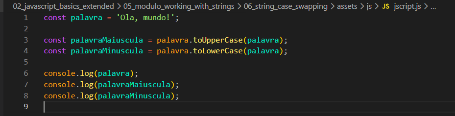

String Case Swapping
Intro
Aqui iremos ver uma forma de estamos manipulando strings.
Aqui iremos ver uma forma de estamos manipulando strings.
Teremos o seguinte codigo como exemplo:

Podemos observar que criamos algumas variavel, a primeira com a string enquanto algumas estao manipulando a primeira string.
Com ele conseguimos fazer com que nossa string passe toda para maiuculo, para usar ele primeiro chamamos a variavel que desejamos manipular seguindo por .toUpperCase().
Faz basicamente o mesmo que toUpperCase porem convertendo tudo para minusculo.